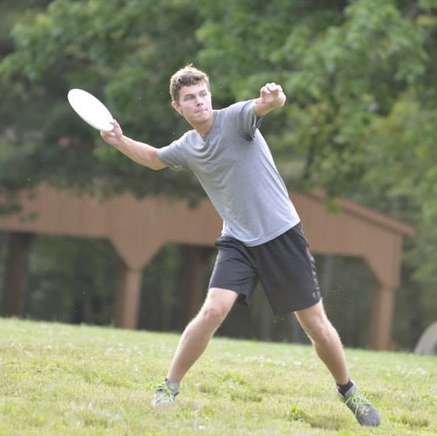
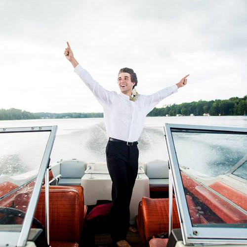
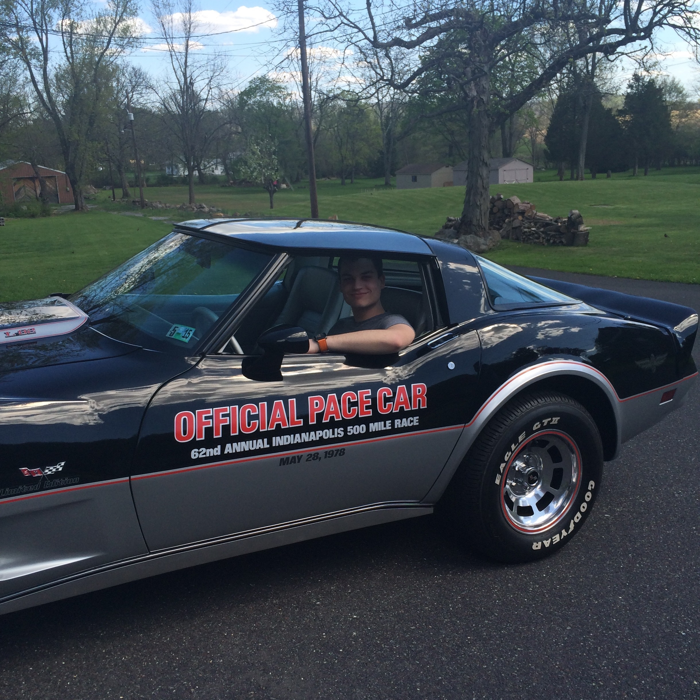
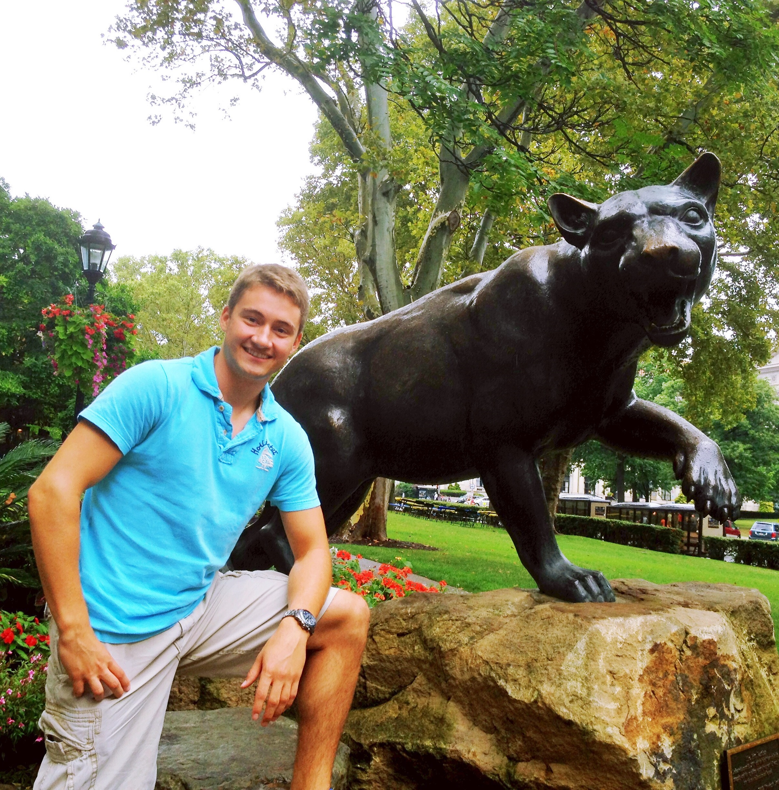

Brandon Contino
President
Brandon is currently a junior pursuing a major in Electrical Engineering and a minor in Economics. Although Brandon had near to no robotics experience before college, he joined RAS his freshman year and has since been addicted. From this addiction he has discovered that almost all robots intrigue him, but he has a special interest in aerial robots and transportation. He hopes that anyone even mildly interested in robotics joins in order to gain exposure and see if they share the same passion. When Brandon has some free time, you'll likely find him either coding, flying his Hubsan Mini, or playing pick up games of soccer, football, or frisbee.
Jessica Schneider
Vice President
Jessica is a junior studying Electrical Engineering. She is also pursuing minors in Economics and Industrial Engineering, and hopes to attend law school to become a patent lawyer after earning her BS in EE. She joined RAS her freshman year knowing nothing about robots, and still has so much to learn. Her favorite kind of robots are ones that win competitions (and ones that are autonomous). Her favorite part about RAS is the fun and super smart people who are involved in the club. Aside from RAS, Jessica really enjoys avocados, physics, scarves, playing the piano, running, online shopping, and eating.
Quentin Torgerson
Director of Business & Project Co-Lead
fuwfhw fwojwig guwhow huhfiowhfowhf fiwfhf eh f hf f efi eijiwgoiwhgwe gihif gig wghwog wwheihwug wefhgua aighwhg igewifhifiwehfihf ffih ihu f uhfi ui iho ih uif yhgyuyg yigoh yg ihguigoi y iyguh yfop ohif nof j gf pp fpwf yfg wufwjfowgfyf iug gho iyfyf iiohwf afw fgffuwhfyi ygwfowhfu ioifg fuhfiofigf ifhiofgf pfug fgfoihfy ef ufheig
James Braza
Project Co-Lead
Hello, my name is James Braza. I discovered robotics in college, or maybe ... robotics found me! I am a junior majoring in Mechanical Engineering with a minor in Economics. My career interests lie in designing dynamic electromechanical systems. I enjoy working with mechanical actuation and electronic controls. Outside of academics, I play on Pitt’s club hurling team, as well as intramural soccer, basketball, frisbee, and volleyball. If I have free time, you might find me rock climbing or playing racquetball. My favorite video game currently is Star Wars Battlefront II. I love cooking, especially when it’s with people. I appreciate listening to music and sharing it with people. I am looking forward to leading a project this year and developing some really cool robots with Pitt’s RAS.
Levi Burner
Project Lead
Levi is a sophomore pursuing a degree in Electrical Engineering with a minor in Computer Science. His first brush with electronics was building a crystal radio with his grandfather at the age of 6. From then on he was hooked. With the support of his Grandfather he continued to develop his skills with electronics and microcontrollers throughout highschool. Levi hopes to have a job with an alternative energy company someday, particularly with a company that makes wind turbines. In his free time, Levi enjoys driving his '92 Firebird, camping, watersports, and dreaming up new robotics projects.
Ben Bush
Project Co-Lead
Ben is a junior earning his degree in Mechanical Engineering, along with a minor in Mathematics and a certificate in Nuclear Engineering. He hopes to work in the nuclear power or nuclear propulsion field upon graduation from Pitt. He also plans to attend grad school for his MS in nuclear engineering or possibly his MBA. In his free time, he loves to tinker with engineering projects, and particularly is fond of woodworking. He first joined RAS Freshman year, inspired by the courses and clubs he was a part of in high school. Although he is better versed in the mechanical systems in robotics, he looks forward to learning more about the control side of robotics.
Jonathan Kenneson
Project Co-Lead
Jonathan is currently a junior pursuing a degree in Computer Engineering, along with a minor in Industrial Engineering. Jonathan joined RAS his sophomore year, hoping to find similar-minded people who shared his passion for robotics. He quickly found that RAS was the club for him! Over the next few semesters, he formed great friendships with wonderful people and significantly increased his knowledge of robotics. Outside of robotics and engineering, Jonathan prefers the serenity of nature to the bustle of inner-city life. Hiking, camping, kayaking, water skiing, climbing, exploring; anything outdoors interests him. He is involved with music and the arts as well as sports, and loves spending time with his family and friends.
Vinayak Nesarikar
Project Co-Lead
Vinayak Nesarikar is a junior pursuing a degree in Electrical Engineering with minors in Computer Science and Economics. After earning his undergraduate degree Vinayak would like to go to grad school to earn his MS in Electrical Engineering and his MBA. He was a member of his high school’s First Robotics team for all four years in high school and joined RAS his freshmen year of college. For fun Vinayak enjoys hanging out with his friends, working out at the gym, working on robotics/programming projects, watching TV, and playing sports.
Xavier Torgerson
Project Co-Lead
fuwfhw fwojwig guwhow huhfiowhfowhf fiwfhf eh f hf f efi eijiwgoiwhgwe gihif gig wghwog wwheihwug wefhgua aighwhg igewifhifiwehfihf ffih ihu f uhfi ui iho ih uif yhgyuyg yigoh yg ihguigoi y iyguh yfop ohif nof j gf pp fpwf yfg wufwjfowgfyf iug gho iyfyf iiohwf afw fgffuwhfyi ygwfowhfu ioifg fuhfiofigf ifhiofgf pfug fgfoihfy ef ufheig